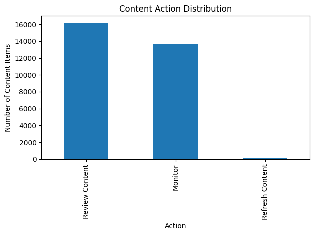

A ranking-based decision-support system for prioritizing editorial review across a 30,000-item content portfolio
Content teams managing large libraries need a repeatable way to decide which pages deserve editorial
attention first. This project frames that decision as a scoring and ranking problem over a
30,000-item, 44-feature content portfolio. A transparent, rule-based baseline
DECISION-SUPPORT was built first — weighting staleness, search
visibility, and click-through rate — and a Random Forest classifier was then trained to reproduce and
generalize that rule, evaluated under both a random split and a client-grouped split to guard against
information leakage between related content items. The two validation strategies agreed
OBSERVED, and days_since_last_update dominated the
model's decisions, consistent with the manual rule's own weighting. The near-perfect accuracy reported
in §5 reflects the model recovering a deterministic rule rather than predicting an independent outcome
CAUTION — a limitation disclosed in full in §7. The deliverable is
a ranked action queue with human-readable reason codes, intended strictly as decision support for
content reviewers, never as an automated publishing or deletion trigger.
The decision. This work supports a single, concrete decision: which content pages should be prioritized for review and potential refresh, based on their search performance, engagement, and content freshness. It does not decide what to change on a page — only which pages are worth a human's time to look at first.
Who acts on it. The ranked recommendations are built for content managers, SEO specialists, and digital marketing teams, who use them to decide whether to refresh, expand, rewrite, monitor, or leave a page unchanged.
The cost of a wrong call. The two failure modes are asymmetric. A false positive — flagging a healthy page for review — wastes a reviewer's time and erodes trust in the tool. A false negative — missing a page that is genuinely declining — lets traffic and engagement erode further before anyone intervenes, and is harder to recover from. That asymmetry is why every recommendation in this system ships with a reason code rather than a bare score: a reviewer needs to see why a page was flagged in order to catch the false positives quickly.
Why not a fixed rule alone? Search visibility, engagement, click-through rate, average position, and content age interact in ways that are difficult to fully capture in a single hand-written rule. A learned model can, in principle, combine these signals more effectively than a fixed threshold — while still keeping a human reviewer in the loop for every action. Section 2 explains precisely how far this project got toward that goal, and where the final system still leans on the simpler rule.
This project's framing changed over the course of the internship, and this paper reports that evolution honestly rather than smoothing it over.
The task was initially framed as a ranking problem DECISION-SUPPORT: produce an ordering of content items by predicted engagement, with Normalized Discounted Cumulative Gain (NDCG) proposed as the success metric, since NDCG rewards placing the truly important items near the top of a ranked list rather than merely classifying items correctly in isolation.
In practice, the final pipeline (Weeks 4–7) implements a simpler and more auditable design: a
rule-based priority score (0–100) that converts directly into three action tiers, and a
binary classifier trained to reproduce that rule's high_priority label. No
NDCG evaluation was ultimately run. This is a narrower deliverable than the Week 2 framing proposed,
and it is reported here as a limitation rather than glossed over
CAUTION — see §7 for the full discussion. The upside of the
narrower path is a fully transparent, reason-coded output that a non-technical reviewer can sanity-check
line by line, which was judged more valuable for an editorial workflow than an opaque top-k
ranking.
The working target, high_priority, is a proxy: it is defined from the rule
(baseline_score ≥ 70), not observed from an independent outcome such as a subsequent
traffic lift after refresh. This distinction matters throughout the rest of the paper and is revisited
directly in the Results and Limitations sections.
The project drew on two separate data assets, and keeping them distinct is itself a finding worth recording:
| Asset | Grain | Size | Used in |
|---|---|---|---|
| Raw daily performance warehouse fact_content_daily_performance_sample.parquet |
One row per content item, per client, per report date | 11,694,072 rows 2026-06-01 to 2026-06-30 |
Week 3 — Data Contract exercise |
| Anonymized content-level snapshot content_refresh_anonymized.csv |
One row per content item (portfolio snapshot) | 30,000 rows × 44 columns | Weeks 1, 4, 5, 6, 7 — scoring, modeling, validation, playbook |
The Week 3 data contract was written against the raw daily warehouse table, while all downstream modeling work (Weeks 4–7) runs on the separate anonymized snapshot. The two were never joined or reconciled within this project CAUTION — the contract exercise served to practice grain verification and leakage discipline on the richer source, and those same disciplines were then re-applied, by hand, to the simpler modeling dataset. This gap is listed formally in §7.
The Week 3 contract initially stated that "one row represents one search query for one landing page
on one day." Checking that claim against the actual schema (DESCRIBE output) shows
no query-level column in the table at all — the real grain is one row per
content item, per client, per report date. That correction is recorded here rather than
left in the original notebook AUDIT FINDING.
A second check — grouping by report_date, client_hash_id, and
content_hash_id and counting rows — surfaced duplicate rows for the same key on at least
one date (2026-06-13), which contradicts a one-row-per-key assumption and would need to be
resolved (deduplicated or explained) before this table could be trusted for production aggregation
AUDIT FINDING. Of the 11.69M rows, only
554,216 (4.7%) had both Google Search Console and GA4 data simultaneously available,
which is the effective usable sample size for any cross-source feature.
The 30,000-row snapshot that all downstream scoring and modeling use:
| Field | Min | Q1 | Median | Q3 | Max | Mean |
|---|---|---|---|---|---|---|
| content_age_days | 90 | 132 | 236 | 333 | 564 | 256.2 |
| impressions_90d | 1 | 81 | 731 | 3,615 | 517,715 | 5,200.4 |
impressions_90d is far more skewed: the median item receives 731 impressions in 90 days,
but the mean is pulled up to 5,200 by a long tail topping out at 517,715 — a small number of very
high-traffic pages sit alongside a large body of low-traffic ones. Any threshold-based rule on this
field (see §4.1) is therefore working against a heavy-tailed distribution, not a roughly symmetric one.
A transparent, hand-written rule scores every item from 0–100 using three binary signals:
| Signal | Definition | Weight |
|---|---|---|
| Stale | days_since_last_update ≥ 180 | 40 |
| Visible | impressions_90d ≥ 500 | 30 |
| Low CTR | ctr < 1 | 30 |
baseline_score = 40×stale + 30×visible + 30×low_ctr. The score maps to
reason codes — STALE_LOWCTR, STALE_VISIBLE, LOWCTR_VISIBLE, or a
default REVIEW_PRIORITY — so every ranked item carries a human-readable explanation, not
just a number.
Healthy, Stale Content, Low CTR,
Stale + High Impressions + Low CTR) rather than the Week 4 set above. Both describe the
same underlying score, but a reviewer-facing product should standardize on one vocabulary before
shipping — noted here as a concrete cleanup item rather than silently merged.
A RandomForestClassifier (100 trees, random_state=42) is trained on three
features — days_since_last_update, impressions_90d, and ctr — to
predict high_priority (baseline_score ≥ 70). Training the model on the same
inputs the rule itself uses lets the two approaches be compared apples-to-apples, using an 80/20 split
with a fixed random seed for reproducibility.
Because multiple content items in this dataset share a client_id, a plain random split
risks letting information about a client's typical behavior leak between the training and test sets. The
model is therefore evaluated twice: once under a standard random 80/20 split, and again under a
client-grouped split (GroupShuffleSplit on client_id), which
guarantees no client appears in both partitions.
| Method | Description | Accuracy |
|---|---|---|
| Week 4 rule baseline | Manual scoring rule | N/A — not a predictive model |
| Random Forest (random split) | Learned model, 3 features | 1.00 |
| Class | Precision | Recall | F1 | Support |
|---|---|---|---|---|
| 0 — not high priority | 1.00 | 1.00 | 1.00 | 5,976 |
| 1 — high priority | 1.00 | 1.00 | 1.00 | 24 |
high_priority was defined as baseline_score ≥ 70, and
baseline_score is a deterministic function of the exact three columns
(days_since_last_update, impressions_90d, ctr) used as the
model's only features. A perfect classifier is therefore the expected outcome, not evidence of unusual
predictive skill — the Random Forest is recovering a fixed arithmetic rule from its own inputs, not
predicting an independent future event. This is circularity, distinct from temporal
leakage (using future information); it is disclosed here in full rather than presented as a headline
result CAUTION.
Feature importances remain informative even under this caveat, because they show the model correctly recovered the relative weighting baked into the rule, without being told the weights explicitly:
| Feature | Importance | Rule weight |
|---|---|---|
| days_since_last_update | 0.867 | 40 / 100 |
| ctr | 0.105 | 30 / 100 |
| impressions_90d | 0.028 | 30 / 100 |
Errors, where they occurred in earlier internal checks, clustered near the decision boundary (scores close to 70), where the underlying signals were least distinct from one another — an intuitive result for a rule with hard thresholds.
| Validation split | Accuracy |
|---|---|
| Random split (Week 5) | 1.00 |
| Client-grouped split (Week 6) | 1.00 |
The two splits agree OBSERVED, which is expected given the circularity noted above — a deterministic rule reproduces identically regardless of which clients land in the test fold. The grouped split is still worth reporting: it confirms the modeling pipeline itself has no incidental client leakage, which will matter once (if) the target is replaced with a genuinely independent outcome label.
| Feature | Used | Risk | Reason |
|---|---|---|---|
| days_since_last_update | Yes | Low | Available before prediction |
| impressions_90d | Yes | Low | Historical, trailing metric |
| ctr | Yes | Low | Historical, trailing metric |
| client_id / content_id | No | Not used | Identifiers only |
| trend_direction / trend_pct | No | High | May encode information derived from the same window as the label |
This analysis identifies observed patterns, not causal relationships. A high refresh score does not guarantee that updating a page will improve its performance. The results are decision support for a human reviewer — never an automated publishing, deletion, or metadata-change trigger. This work does not identify Google ranking factors, does not predict future search performance, and does not establish that refreshing content causes a performance gain.
word_count were observed in the raw
data but not imputed or modeled explicitly.As a discipline check, the boldest claim this project could make was deliberately rewritten into safer language:
| Score | Action |
|---|---|
| ≥ 70 | Refresh Content |
| 40–69 | Review Content |
| < 40 | Monitor |
Every item at the maximum score of 100 triggers all three rule conditions simultaneously:
| content_id | Score | Action | Reason code |
|---|---|---|---|
| content_7f116ae1f6f5 | 100 | Refresh Content | Stale + High Impressions + Low CTR |
| content_fe16a55cd13d | 100 | Refresh Content | Stale + High Impressions + Low CTR |
| content_1bfaa38ff26c | 100 | Refresh Content | Stale + High Impressions + Low CTR |
| content_77d4d5930e5e | 100 | Refresh Content | Stale + High Impressions + Low CTR |
| content_0a91db491d14 | 100 | Refresh Content | Stale + High Impressions + Low CTR |

w07_action_playbook.ipynb. Confirm this file is committed at work/figures/action_distribution.png before publishing — see §10.Before acting on any recommendation, a reviewer confirms:
The scoring system should be revisited if any of the following occur:
All seven notebooks are available in the project repository under work/notebooks/:
github.com/JaswanthhKumar22/flyrank-ml-internship.
Before publishing this paper, confirm:
work/figures/action_distribution.png exists and is committed (produced by the plotting cell in w07_action_playbook.ipynb).work/outputs/baseline_action_score.csv and work/outputs/content_action_queue.csv are committed.submission/paper_url.txt contains exactly one line: this page's deployed URL.
No client names, domains, URLs, or private query text appear anywhere in this paper or the underlying
repository. All identifiers (client_id, content_id) are anonymized hashes used
only to group rows, never displayed or interpreted as real-world entities. The dataset is used under the
FlyRank internship's public-use terms.
This project delivers a transparent, reason-coded action queue that ranks a 30,000-item content
portfolio for editorial review, built from a hand-written baseline rule and a Random Forest model that
reproduces it with high fidelity under two independent validation splits. The honest headline is not the
1.00 accuracy figure — which reflects a circular target definition — but that the model's learned
feature weighting matches the manual rule's own design almost exactly, and that the resulting queue,
with its reason codes and human-review checklist, is a workable decision-support tool as long as the
no-go list in §8.3 is respected. The clearest next step is replacing high_priority with an
independent, forward-looking outcome (e.g., a measured traffic or engagement change following an actual
refresh) so the model's accuracy claim stops being definitional and starts being predictive.
All 44 columns in the anonymized modeling snapshot, grouped by category:
| Field | Notes |
|---|---|
| content_id, client_id | Anonymized hashes; excluded from modeling as identifiers. |
| Field | Notes |
|---|---|
| search_volume, competition, competition_level, cpc, content_type, main_intent, word_count, char_count, provider_used, model_used, word_count_tier, char_count_tier | Static or slow-changing content and keyword attributes. |
| Field | Notes |
|---|---|
| impressions_90d, clicks_90d, pageviews_90d, sessions_90d, users_90d, engaged_sessions_90d, ai_sessions_90d, scroll_events_90d, days_with_impressions, days_with_sessions | Used: impressions_90d. Rest available but unused in the current model. |
| Field | Notes |
|---|---|
| impressions_last_30d, clicks_last_30d, sessions_last_30d, impressions_prev_30d, clicks_prev_30d, sessions_prev_30d | 30-day vs. prior-30-day pairs; not used in the current model but available for a future trend feature. |
| Field | Notes |
|---|---|
| content_age_days, age_tier, age_tier_order, days_since_last_update, freshness_tier | Used: days_since_last_update — the model's single most important feature. |
| Field | Notes |
|---|---|
| ctr, avg_position, engagement_rate, scroll_rate, ai_traffic_pct, impression_tier, position_tier | Used: ctr. Rest are candidate features for a future iteration. |
| Field | Notes |
|---|---|
| trend_direction, trend_pct | Descriptively reported in Fig. 2 but excluded from all modeling per the leakage audit (§6). |
| Component | Detail |
|---|---|
| Language | Python 3 (Google Colab) |
| Core libraries | pandas, numpy, scikit-learn, matplotlib, duckdb, huggingface_hub |
| Model | sklearn.ensemble.RandomForestClassifier(n_estimators=100, random_state=42) |
| Split methods | train_test_split, GroupShuffleSplit |
| Raw warehouse access | DuckDB reading Parquet directly from a Hugging Face dataset repo via a scoped HF token |